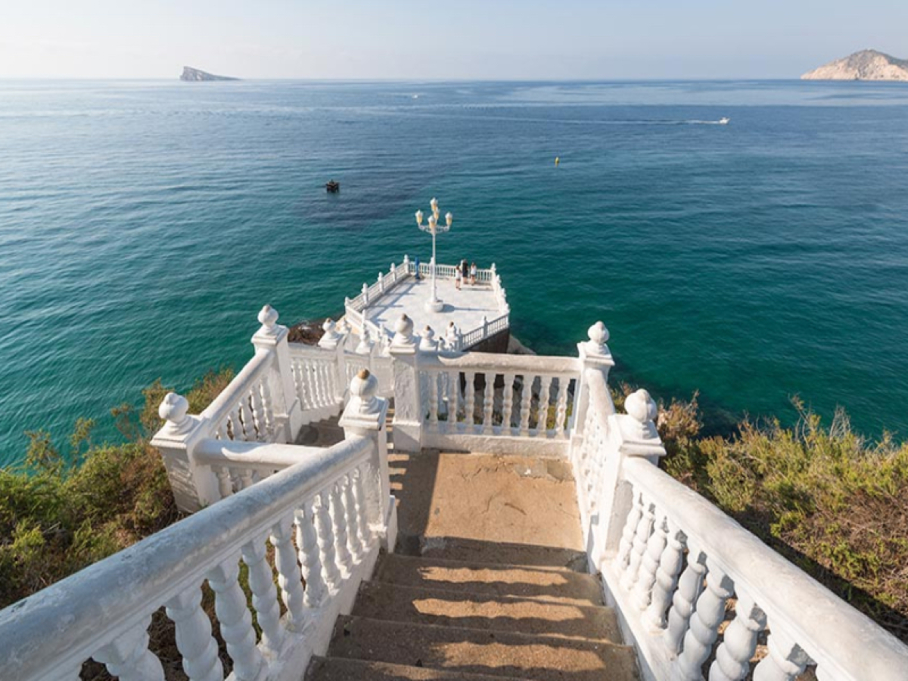
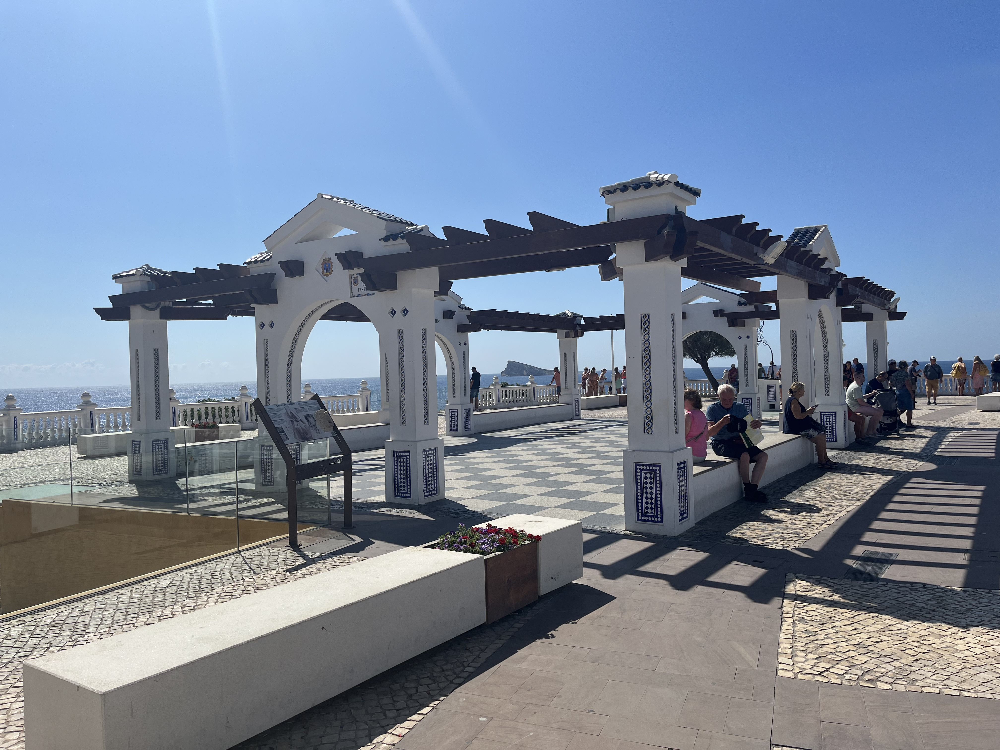
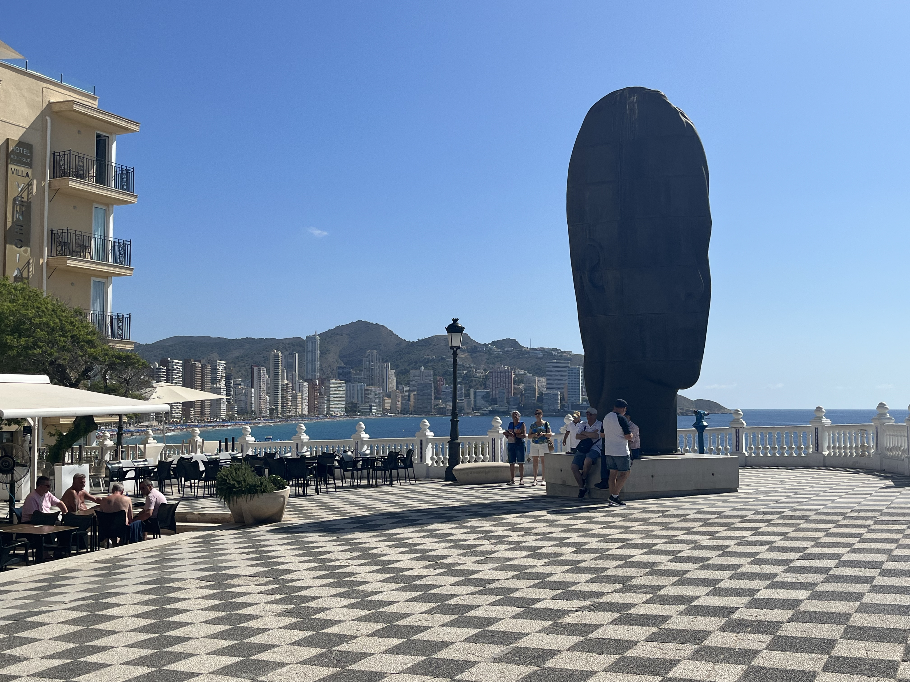

Балкон де Медитеранео
След настаняването ми в хотела, излязох на разходка до Балкон де Медитеранео, известен като "Балконът на Средиземно море". Това е популярна туристическа атракция в града. Разположена е между плажовете Леванте и Пониенте на площада „Plaça del Castell“. Оттук се откриват великолепни гледки към Средиземно море и крайбрежието. Площадката заема мястото на някогашен замък от XVII век, издигнат за защита от пиратски нападения. Оттам идва и името на площада – Plaça del Castell („Площадът на замъка“). През XX век районът е превърнат в обществена тераса с бяла балюстрада, мозайки и фонтани, които му придават неокласически чар.


